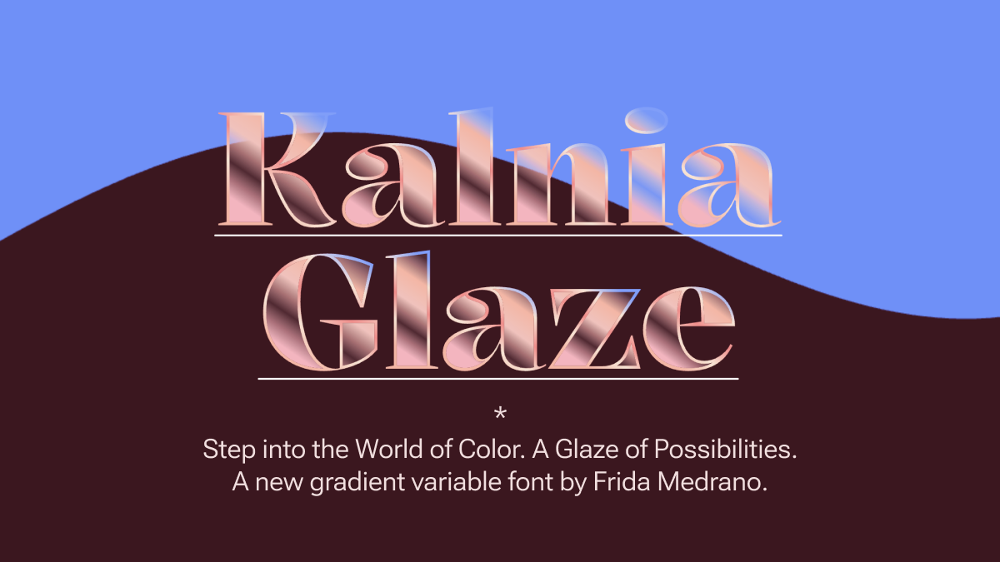
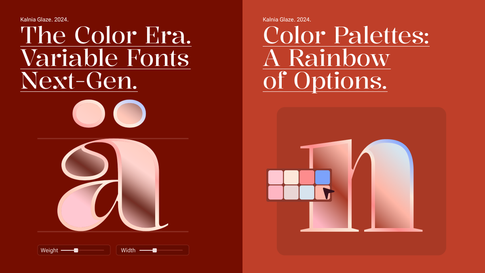
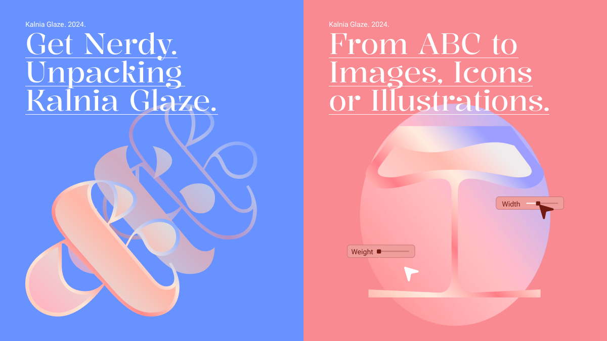

Kalnia Glaze is the color font version of Kalnia Typeface also available at Google Fonts.
Inspired by the Victorian era, Kalnia Glaze features high contrast and refined terminals. Much like the Victorian Sash windows that were meticulously glazed to capture a timeless charm, Kalnia Glaze takes the essence of this historical craftsmanship into its letterforms. It incorporate their structural elegance, volume, and lighting nuances, to enhance the original structure of Kalnia typeface with added complexity and decoration.
To contribute, see https://github.com/fridamedrano/Kalnia-Glaze
Kalnia Glaze is a new typeface commissioned by Google Fonts, that experiments with the new color font technology in variable fonts, inviting you to step into a world of color and add vibrancy and depth to your projects.
COLRv1 is the latest version of the color font format combining transparency, gradients, and variable font technology. As one of the advantages of the format, it's possible to change the color palettes in code. CSS offers easy and powerful customization options using the "override-colors" property. Kalnia Glaze also has four main icons with the option of using them solo or with a frame.
Kalnia Glaze is the result of an broad exploration of the latest COLRv1 format and it's integration with the variable font technology. The objective was not only to create a complex layered design to explore the possibilities of the format but also to streamline and expedite the process, minimizing the need for manual adjustments through software and emphasizing the automation of processes using paintcompiler, a program by Simon Cozens.
